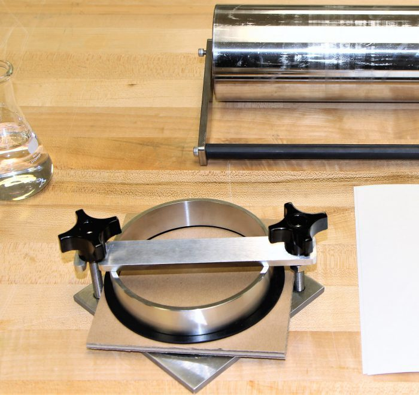

Cobb
absorção elevada é importante para produtos tais como papéis sanitário e toalha. no entanto, as fibras de celulose ao absorverem água, tornam-se inchadas, mais flexíveis, e tem a maior parte de suas propriedades físicas e mecânicas alteradas.
Quando a resistência de tais materiais é necessária, como para a maioria das aplicações de embalagem, são necessários tratamentos para minimizar tais absorções. As polpas são tratadas com agentes adesivos que reduzem esta interação com água, tornando a estrutura mais hidrofóbica. Agentes de colagem previvem o espalhamento e a penetração de líquidos e podem ser adicionados na preparação da massa ou através de aplicação nas superfícies já formadas. O conhecimento do grau de resistência destes materiais em relação a água é de grande importância para as diferentes finalidades de utilização, em especial para materiais de embalagem.
O método de Cobb, descrito na norma ISO 535, é o mais amplamente utilizado por fabricantes e usários de embalagens para medir a interação de cartões e papelões em contato com água.
